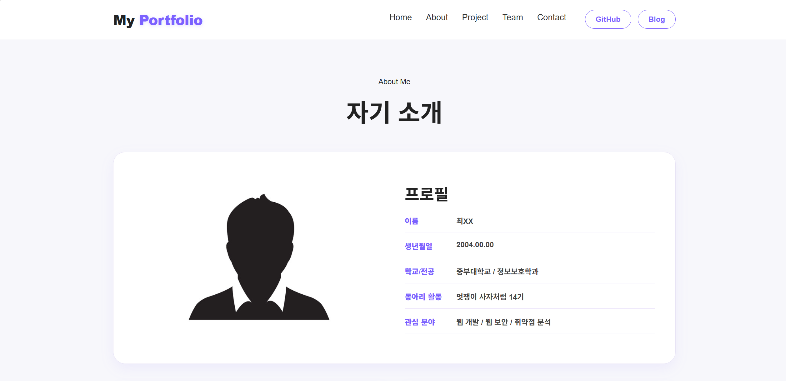
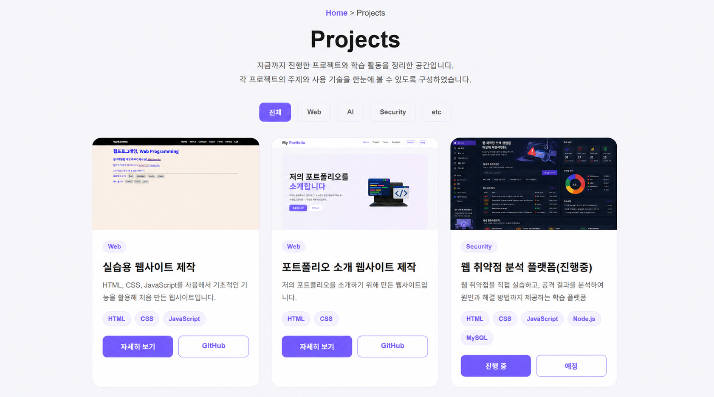
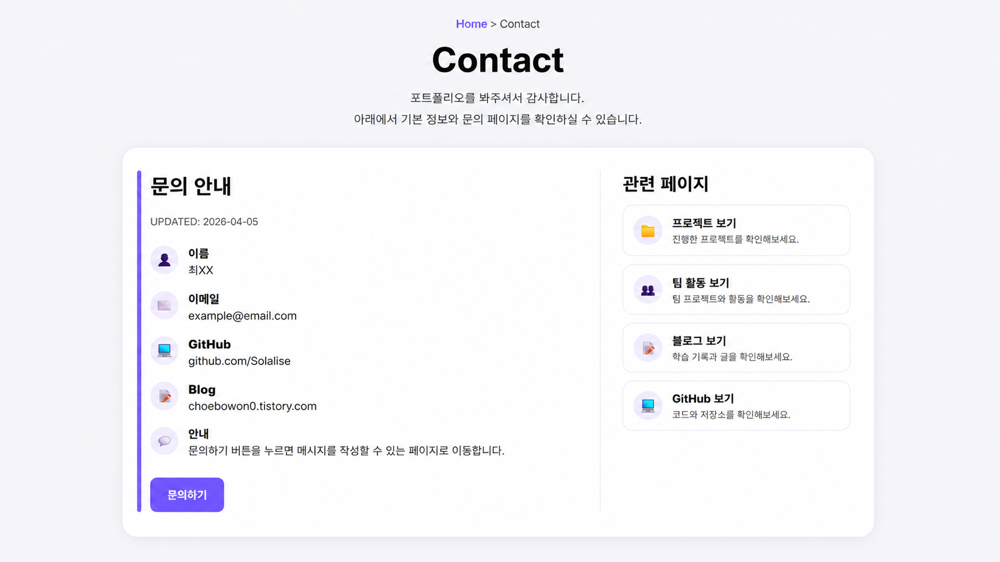

개인 포트폴리오 웹사이트
HTML과 CSS를 기반으로 제작한 개인 포트폴리오 웹사이트입니다. 프로젝트, 기술 스택, 팀 활동 등을 카드형 UI와 다양한 레이아웃으로 구성하여 사용자에게 직관적으로 정보를 전달할 수 있도록 구현하였습니다.

프로젝트 개요
본 프로젝트는 HTML과 CSS를 중심으로 제작한 개인 포트폴리오 웹사이트입니다. 단순한 정보 나열이 아닌 카드형 UI, 리스트, 표, 이미지 요소 등을 활용하여 사용자에게 직관적으로 정보를 전달할 수 있도록 구성하였습니다. 여러 페이지를 연결하여 하나의 완성된 웹사이트 형태로 구현하는 데 중점을 두었습니다.
제작 목적
웹프로그래밍 수업에서 배운 HTML과 CSS 기술을 실제 웹사이트 형태로 구현하고, 프로젝트와 학습 내용을 하나의 포트폴리오로 정리하기 위해 제작하였습니다. 또한 UI 디자인과 레이아웃 구성 능력을 향상시키는 것을 목표로 하였습니다.
페이지 구성
- Main : 사이트 소개 및 주요 프로젝트 카드
- About : 자기소개 및 기술 스택, 학습 과정
- Project : 프로젝트 목록 및 상세 페이지
- Team : 팀 프로젝트 및 역할 소개
- Contact : 문의 및 정보 입력 form 페이지
주요 기능
- 카드형 UI를 활용한 프로젝트 목록 구성
- 페이지 간 네비게이션을 통한 구조 연결
- 기술 스택 퍼센트 바 시각화
- hover 효과 및 애니메이션 적용
- 반응형 레이아웃 구현
화면 미리보기
메인 페이지
프로젝트 카드와 주요 정보를 한눈에 볼 수 있는 메인 화면입니다.

About 페이지
자기소개와 기술 스택을 정리한 페이지입니다.

Project 페이지
진행한 프로젝트를 카드 형태로 정리한 페이지입니다.

Contact 페이지
문의 및 기본 정보를 입력할 수 있는 form 페이지입니다.
내가 맡은 역할
본 프로젝트는 개인 포트폴리오로, 기획부터 디자인, HTML 구조 작성, CSS 스타일링까지 전체 제작 과정을 직접 수행하였습니다.
어려웠던 점
여러 처음 써보는 css를 적용하려다 보니 계속 오류가 나기도 하고 그로 인해 막 사용하는 방법을 찾아보다 보니 시간이 오래 걸리고 구현하는데 어려움을 겪었습니다.
해결 방법
수업 시간에 사용하던 사이트와 PPT를 활용하여 해결하였습니다.
배운 점
실제 웹사이트를 제작하면서 UI 구성과 레이아웃 설계의 중요성을 이해하게 되었고, HTML과 CSS 활용 능력을 크게 향상시킬 수 있었습니다.